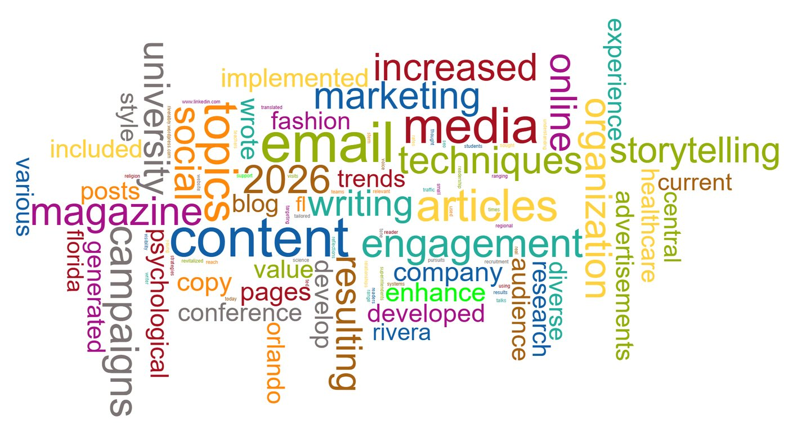
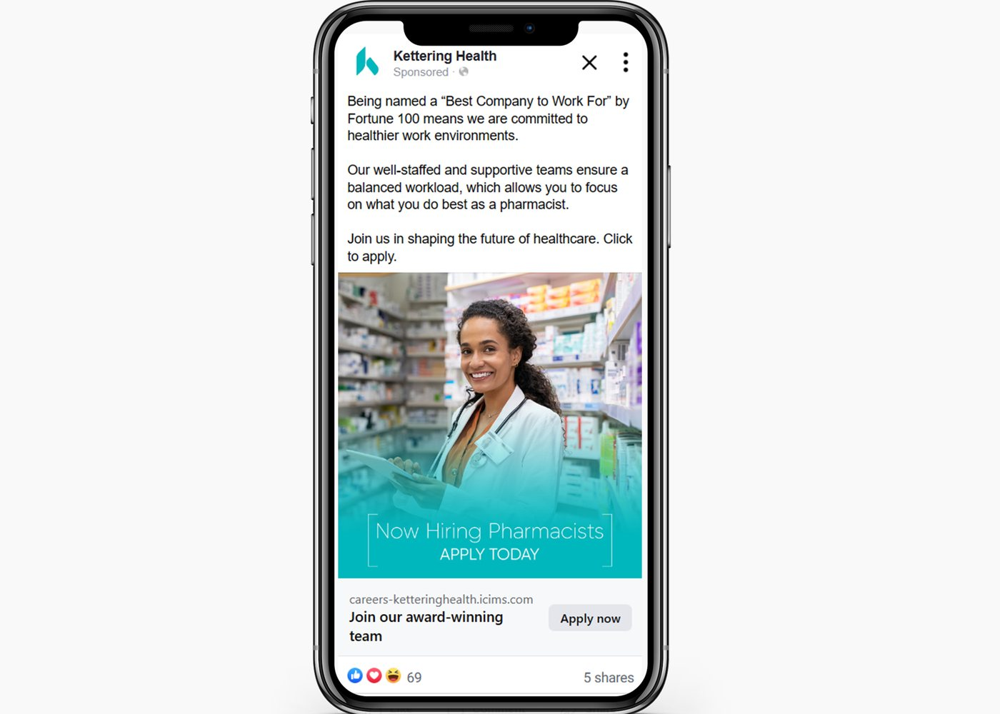
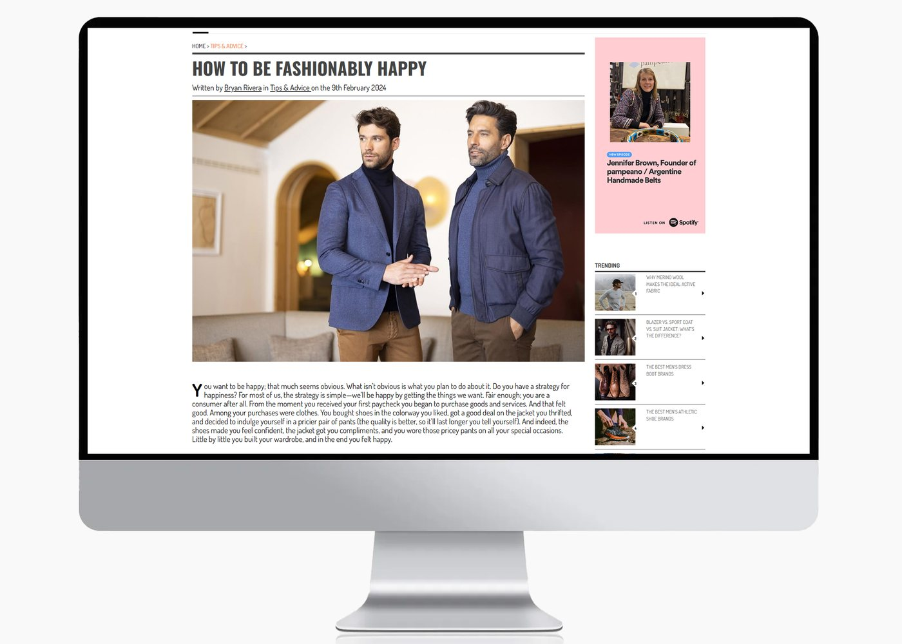
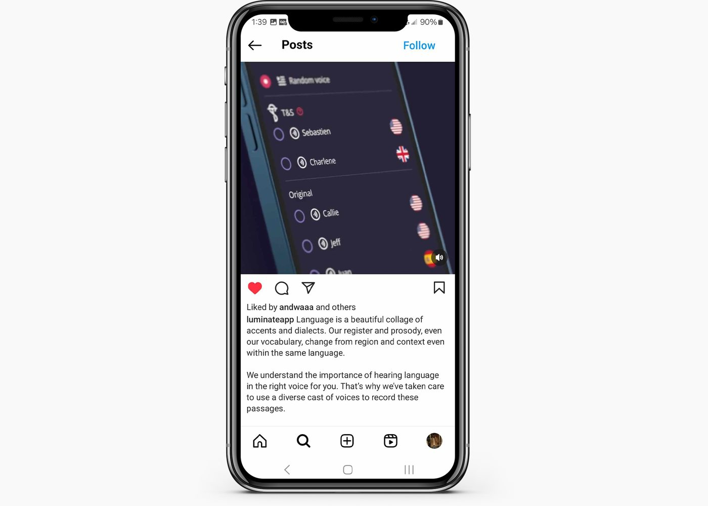

Portfolio
Bryan Rivera
Copywriter | Author | Digital Marketer
About me
For the past several years, I have worked closely with multiple brands and businesses, spanning over ten different industries, to write their persuasive messaging. These brands include Kettering Health, one of the largest medical systems in Ohio.
Regardless of the channel—be it email, social media, or landing pages—my strengths include truly understanding the target audience and finding the right phrases that change their attitudes and behaviors.
“Advertising is not about being clever; it’s about finding a truth that connects the product to the user.”
—Wayne Best, creative director, Kirshenbaum Bond

Overview
Who I've written for
I have worked with the following organizations across healthcare, education, and ministry:
Services
Landing Pages
A brand’s web site is its bread and butter—the digital equivalent of a brick and mortar. When virtual visitors walk through your door, you want to be sure a skilled copywriter has done the work that will capture attention and drive action. That is what I do. I create impactful landing pages, maintain your brand’s voice, and ensure a cohesive user experience.
View landing page case studiesAdvertisements
By understanding the target audience and leveraging data-driven insights, I’ve developed compelling messaging that resonates with viewers. My ads are designed to capture attention, convey value propositions effectively, and drive desired actions. Through strategic placement and optimization, I ensure maximum impact and ROI for advertising campaigns.

Publications
My articles cover a wide range of topics, from fashion to psychology. With expert insights and engaging storytelling, I offer valuable perspectives tailored to different audiences. Whether it’s style advice or translating complex concepts, I aim to captivate and inform with every piece.
Read editorial samples
Social Media
Crafting engaging social media posts is where I shine. I tailor content to resonate with specific audiences, ensuring it aligns with brand identity and values. By leveraging storytelling techniques, I create posts that spark conversations and foster community engagement.
View social media work
Email Marketing
Email provides a highly personal form of communication. I have crafted personalized campaigns, from promotional emails to online newsletters, which engage the reader. I have effectively communicated value propositions through strategic timing and testing, which optimize results for clients.
View email samples“The truth isn’t the truth until people believe you; and they can’t believe you if they don’t know what you’re saying; and they can’t know what you’re saying if they don’t listen to you; and they won’t listen to you if you’re not interesting.”
— William Bernbach
Let's work together
Need words that move people?
I'm open to copywriting, content and digital marketing roles and projects.